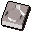
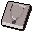
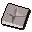
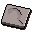

Dommiks Crafting Store.
Inventory config
craftingshop2Run by  Dommik. Open in knowledge graph →
Dommik. Open in knowledge graph →
Located in: Toll Gate
Stock
| Item | Stock | Value | Sells for |
|---|---|---|---|
| 2 | |||
 Ring mould | 4 | 5 gp | 5 gp |
 Necklace mould | 2 | 5 gp | 5 gp |
| 2 | 5 gp | 5 gp | |
| 3 | |||
| 100 | |||
 Holy mould | 3 | 5 gp | 5 gp |
 Sickle mould | 6 | 10 gp | 10 gp |
Shop sells at 100.0% of item value and buys at 65.0%.